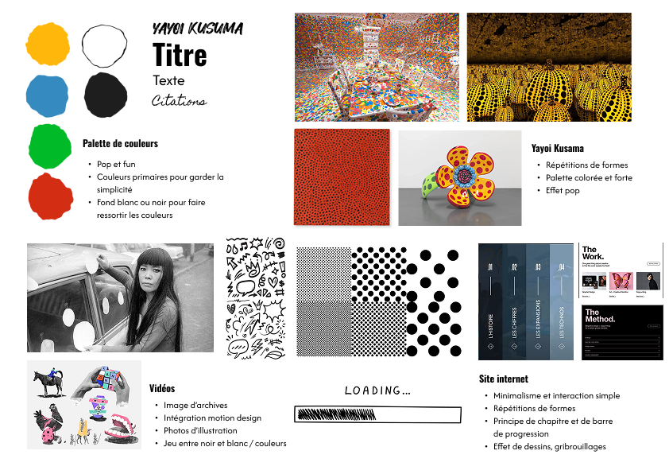

Production
Le projet consistait à organiser une LAN de A à Z, depuis la phase de planification jusqu’à sa mise en œuvre. Ce projet impliquait de prendre en compte de nombreux aspects, qu’ils soient liés à la création, à la communication ou au développement web. La MMI LAN s'est déroulée le 19 décembre 2024, en live sur Twitch.
Élaboration d’éléments graphiques :
Tout d’abord, j’ai effectué la mise en page du règlement des jeux qui a été distribué aux joueurs en respectant la charte graphique établie. Néanmoins, mon rôle principal fut de produire toute la signalétique pour le jour J. J’ai dû trouver des solutions adéquates pour pouvoir allier impact visuel et optimisation des ressources. Pour ce faire, j’ai créé différents types de panneaux.
 Lors de la mise en place des panneaux, j’ai été confrontée à une contrainte technique avec l'impression des panneaux de signalétique dans un sens unique, ce qui a nécessité une adaptation immédiate pour assurer le guidage des visiteurs.
Lors de la mise en place des panneaux, j’ai été confrontée à une contrainte technique avec l'impression des panneaux de signalétique dans un sens unique, ce qui a nécessité une adaptation immédiate pour assurer le guidage des visiteurs.

Des panneaux avec des messages ludiques situés dès l’entrée du bâtiment, conçus pour inciter les visiteurs à monter jusqu’au septième étage afin de découvrir les différents stands de jeux.
Des panneaux pour indiquer le sens de circulation dans la salle principale.
Des panneaux pour indiquer le sens de circulation dans la salle principale.
Organisation de la salle :
Ensuite, nous avons élaboré un plan détaillé de la salle FA300, dans laquelle se déroulait l'événement, pour parer toute éventualité. Le groupe était composé d’une personne de chaque pôle, et je représentais l’organisation événementielle. Cette configuration nous a permis de créer deux espaces distincts : l’un dédié aux joueurs et casters, et l’autre exclusivement réservé à la régie.
Mon rôle le jour J :
En duo avec Lana Ounnalay, notre mission principale consistait à faire respecter le fil conducteur que nous avions établi pour le live Twitch. Plus précisément, j’étais en charge de la gestion du planning, que j’ai dû ajuster tout au long de la journée en fonction des retards, des imprévus techniques et des changements de dernière minute. Bien que les horaires initiaux n’aient pas pu être respectés, ma réactivité m’a permis de redéfinir les nouveaux créneaux avec un délai d’anticipation.
Mon rôle incluait également la communication interne entre les différentes parties de la régie, notamment avec Elouan Chaudun et Gabriel Vareille, afin d’assurer une parfaite synchronisation des overlays avec l’image diffusée à l’écran. Par ailleurs, j’ai géré une partie de la communication externe, uniquement pour intégrer les happenings au planning, tandis que Lana s’occupait de la communication externe globale.
Après l'événement :
Une fois l'événement passé, nous devions préparer notre soutenance commune et un dossier de projet. Dans ce document, nous devions mettre en avant les différentes étapes de notre processus de production, en justifiant nos choix et en analysant les résultats obtenus. J’ai pris en charge la rédaction de la partie dédiée à l’organisation de l’événement, ainsi que celle sur la signalétique. J'ai également contribué à la relecture globale du dossier.